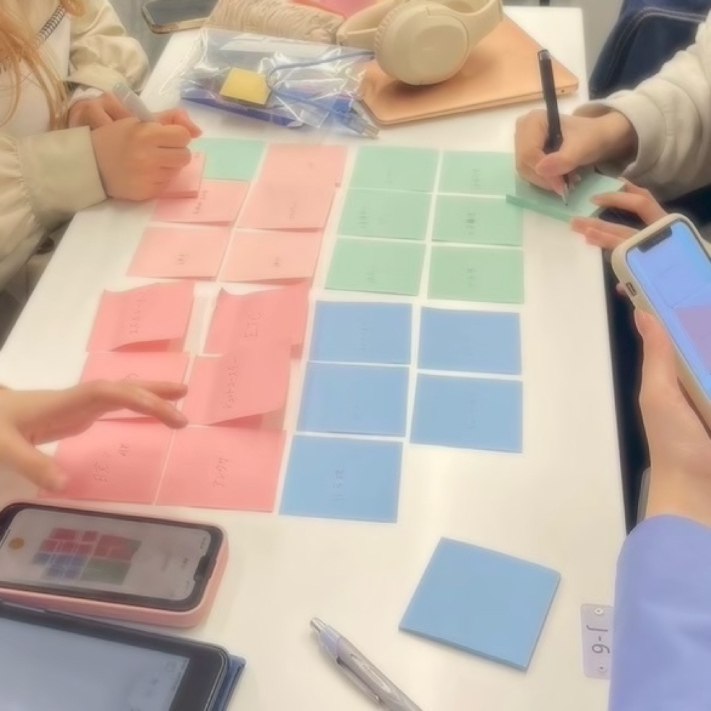
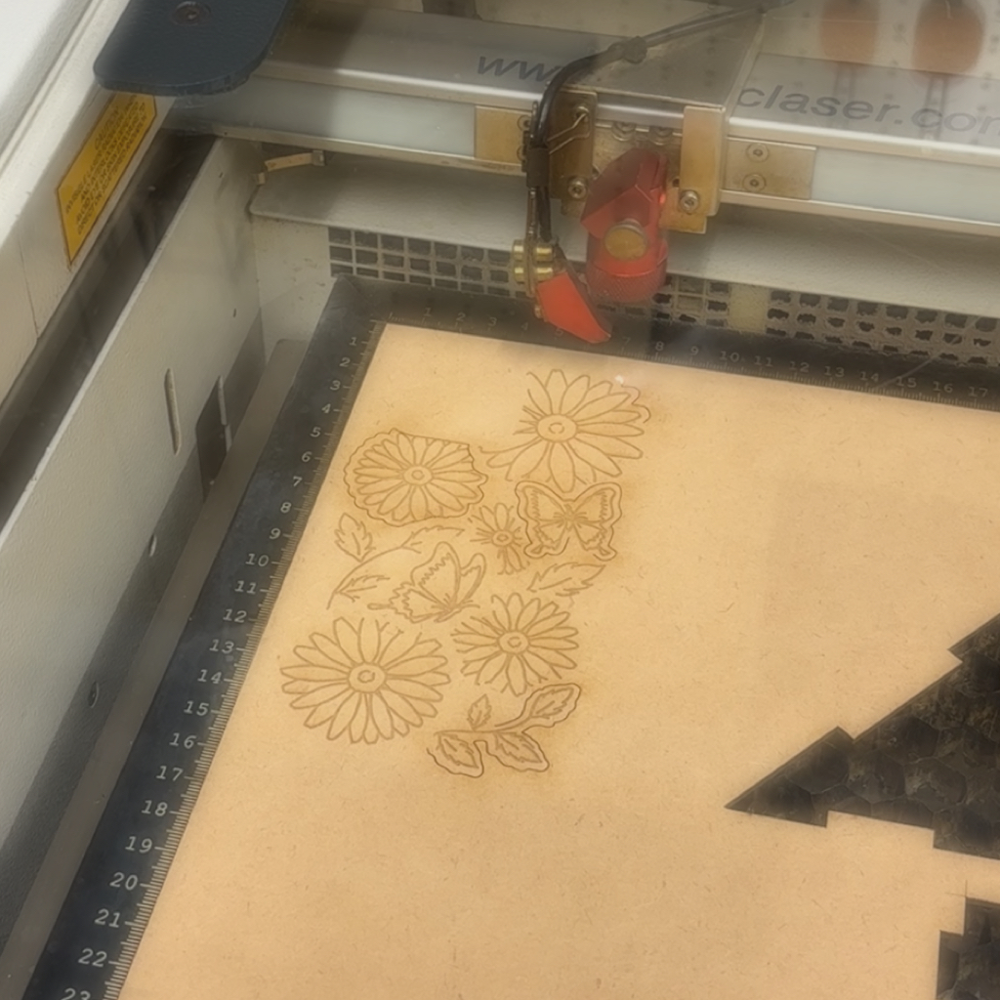

A COLLECTION OF IDEAS & PROCESSES
演習ノート一覧.
これまでの制作と学びの記録。

NOTE NO. 01
デザイン演習1, 2
文化人類学的な観察力と共感力、オープンイノベーションに参加する為の基礎的なデジタル技術を会得する
VIEW NOTES
NOTE NO. 02
デザイン演習3, 4
イノベーションを起こせる可能性がある技術的なことへの造詣を深める
VIEW NOTES
NOTE NO. 03
デザイン演習5, 6
アイディアや技術を社会の中で活かすための経営知識を扱い、ビジネスプランにまで落とし込む。
VIEW NOTES
NOTE NO. 04
デジタル
ファブリケーション
創造的な問題解決能力を得るための道具としてデジタルファブリケーションを扱えるようにする
VIEW NOTES
NOTE NO. 05
道用ゼミ
Make, test, and talk.
デザインと実験と対話のためのスタジオ。